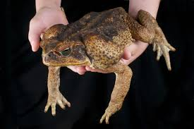

difference between frogs and toads
 american bullfrog |
 Cane toad |
|---|---|
| frog | toad |
| mostly live in areas of high humidity/near bodies of water | able to live in drier areas due to their ability to burrow in the soil to maintain humidity in dry times |
| webbed toes for swimming | typically do not have webbed toes |
| longer stronger legs for jumping | shorter legs adapted more for walking |
| able to live arboreal, terrestrial or aquatic lifestyles depending on species | mostly live terrestrial lifestyles due to generally not being as good at jumping and climbing as frogs with some exeptions |